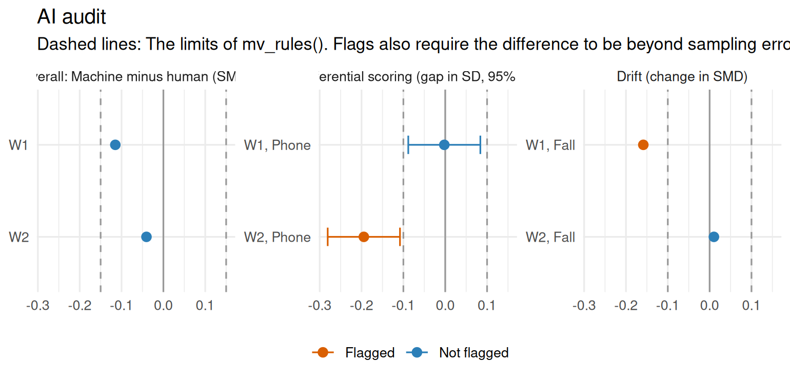

Chapter 18 Validity, fairness and governance of AI
Learning goals. After this chapter you can
- place an AI component in the argument-based approach to validity, and name the threats it adds to each inference;
- audit an automated scorer with
ai_audit(): Agreement with human raters, differential scoring across groups, drift across administrations and DIF on the test as scored; - fold the results of difficulty models and item generators into the same audit;
- draft a validity argument with
validity_argument(), and say what evidence no statistic can provide: Human oversight, disclosure and appeals.
Key terms: Validity argument, differential scoring, DIF, human-in-the-loop, automated scoring.
18.1 The ideas
The earlier chapters of this part each checked one AI component on its own terms: A scoring engine against human raters (Chapter 16), a difficulty model by cross-validation (Chapter 14), an item generator by calibrating its families (Chapter 15). A testing program needs one more step: To ask what the components do to the validity of the scores, for the use the scores are put to. The Standards (American Educational Research Association et al. 2014) apply to AI components as to any other part of a test, and the guidelines of the International Test Commission and the Association of Test Publishers for technology-based assessment (International Test Commission and Association of Test Publishers 2022) add advice on automated scoring, security and accessibility.
The argument-based approach (Kane 2013) organizes the evidence. An interpretation-and-use argument is a chain of inferences from a response to a decision, each resting on a claim that evidence must support:
- Scoring: The score follows the rubric as trained raters apply it.
- Generalization: The score would be about the same with another occasion, form, rater or engine version.
- Extrapolation: The score reflects the construct, equally for all groups of test takers.
- Decision: Using the score for its purpose is appropriate.
An AI component adds threats to every link. A scoring engine may reward features that are not in the rubric, such as length or vocabulary (Williamson et al. 2012). It may be retrained or updated by a vendor between administrations, so that a score means something different from one year to the next. It may treat groups differently: Answers that people would score the same may get lower machine scores when they are typed on a phone or written by English language learners. Johnson, Liu and McCaffrey (2022) separate two questions here. Measurement bias asks whether the scores measure the construct equally for all groups, which is the familiar DIF question. Algorithmic bias asks whether the engine predicts the human score equally well for all groups, given the human score. The second is checked by comparing machine and human scores within groups among responses that people scored the same; we call a failure of that check differential scoring.
The decision inference is different in kind. It is supported by how the scores are used: Which responses a person reads before a score counts (human-in-the-loop), what test takers are told about automated scoring, how a score can be appealed, and how the component is monitored after it goes live. These are matters of policy and documentation. An audit can show which responses need a person; it cannot show that a person reads them.
18.2 Example 1: Auditing a scoring engine
A college uses an automated engine to score two writing prompts, W1 and W2, on a 0 to 4 rubric, for placement into first-year writing courses. Test takers write in a spring or a fall window, on a laptop or a phone. A validity sample of 30% is also scored by a person, and half of those by a second person. We simulate the scores. The engine rewards length, and answers typed on a phone are shorter, so on W2 it gives some phone answers a point less than their true score. A stricter engine version was installed for the fall window, and it marks down some W1 answers.
# Simulated machine and human scores of two writing prompts, 2,400 test takers.
set.seed(1818)
n <- 2400
writing <- data.frame(
person = rep(sprintf("P%04d", 1:n), each = 2),
window = rep(rep(c("Spring", "Fall"), each = n / 2), each = 2),
device = rep(ifelse(runif(n) < 0.3, "Phone", "Laptop"), each = 2),
prompt = rep(c("W1", "W2"), n))
theta <- rep(rnorm(n), each = 2)
true <- pmin(pmax(round(2 + 1.1 * theta + rnorm(2 * n, 0, 0.5)), 0), 4)
noisy <- function(x, p) # off by one point with probability p
pmin(pmax(x + ifelse(runif(length(x)) < p, sample(c(-1, 1), length(x), TRUE), 0), 0), 4)
writing$machine <- noisy(true, 0.25)
short <- writing$device == "Phone" & writing$prompt == "W2" & true > 1 & runif(2 * n) < 0.35
writing$machine[short] <- true[short] - 1 # shorter answers marked down
strict <- writing$window == "Fall" & writing$prompt == "W1" & true > 0 & runif(2 * n) < 0.30
writing$machine[strict] <- true[strict] - 1 # the fall engine version
read <- rep(runif(n) < 0.3, each = 2)
twice <- read & rep(runif(n) < 0.5, each = 2)
writing$human1 <- ifelse(read, noisy(true, 0.25), NA)
writing$human2 <- ifelse(twice, noisy(true, 0.25), NA)
writing$device <- factor(writing$device, levels = c("Laptop", "Phone"))
writing$window <- factor(writing$window, levels = c("Spring", "Fall"))The usual first check is agreement with human raters, which
agreement_report() gives (Chapter 16):
r <- writing[!is.na(writing$human1), ]
agreement_report(r$machine, r$human1, r$human2, by = r$prompt)
#> Machine-human agreement
#> by group n n_double mean_human mean_machine exact adjacent qwk qwk_human
#> W1 All 747 369 1.95 1.82 0.60 0.97 0.83 0.86
#> W2 All 747 369 1.98 1.94 0.61 0.98 0.84 0.85
#> corr smd prmse verdict
#> 0.83 -0.11 0.78 meets
#> 0.85 -0.04 0.80 meets
#> Meets: QWK >= 0.7 and within 0.1 of human-human QWK; |SMD| <= 0.15 overall and <= 0.1 within groups (mv_rules()).Both prompts meet the rules. ai_audit() runs this check and the others in
one call. The first group of device (Laptop) is the reference group, and
the first window (Spring) is the baseline for drift:
audit <- ai_audit(writing, human2 = "human2", group = "device", item = "prompt",
period = "window")
audit
#> AI audit: 6 checks, 2 flags (2 block, 0 review)
#> check tested flagged status
#> human agreement 2 0 ok
#> machine agreement 2 0 ok
#> overall bias 2 0 ok
#> subgroup agreement 4 0 ok
#> differential scoring 2 1 BLOCK
#> drift 2 1 BLOCK
#>
#> Flags:
#> [BLOCK] differential scoring, W2, Phone: gap -0.19 SD, SE 0.04. For
#> responses human raters scored the same, the engine scores Phone
#> students lower than Laptop students.
#> [BLOCK] drift, W1, Fall: SMD -0.20 against -0.04, QWK 0.79 against
#> 0.86. The engine's scores have changed since the first period:
#> Check what changed (engine version, prompts, population) and
#> rescore if needed.Agreement passes overall and within groups, but two checks block. The differential scoring check compares the machine-minus-human difference of phone and laptop answers that people scored the same:
audit$differential
#> # A tibble: 2 × 6
#> item group reference n gap se
#> <chr> <chr> <chr> <int> <dbl> <dbl>
#> 1 W1 Phone Laptop 217 -0.00220 0.0439
#> 2 W2 Phone Laptop 217 -0.195 0.0441On W2, the engine scores phone answers about 0.2 SD lower than laptop answers that people scored the same, four to five standard errors from zero. This is what agreement within groups can miss: Phone users may also score lower in truth (here they do not), so a lower mean alone proves nothing, while a gap at the same human score is the engine’s. The drift check compares each window with the first:
audit$drift[, c("item", "period", "n", "smd", "qwk", "smd_change", "p_change", "drift")]
#> # A tibble: 4 × 8
#> item period n smd qwk smd_change p_change drift
#> <chr> <chr> <dbl> <dbl> <dbl> <dbl> <dbl> <lgl>
#> 1 W1 Spring 400 -0.0418 0.863 NA NA FALSE
#> 2 W1 Fall 347 -0.200 0.788 -0.159 0.000391 TRUE
#> 3 W2 Spring 400 -0.0451 0.859 NA NA FALSE
#> 4 W2 Fall 347 -0.0349 0.825 0.0102 1 FALSEIn the fall, W1’s machine scores fell to 0.2 SD below the human scores, and
agreement dropped. A drift flag needs both a change larger than the rule
and a change beyond sampling error; p_change is Bonferroni-adjusted across
the items and windows tested. Figure 18.1 shows the
three score checks.

Figure 18.1: The score checks of the audit. Dashed lines are the default limits; bars are 95% confidence intervals.
When the test as scored is available, responses adds a DIF analysis with
dif(). DIF on an AI-scored item is flagged for review; DIF on an item the
engine does not score is reported for information, because it belongs to
content review, not to the engine. Lab 10 does this.
18.3 Example 2: Other AI components
The same audit takes the results of the tools of the earlier chapters. Here a difficulty model was trained with the proportion correct of the field test among its features, and one of three item families is not isomorphic:
# Simulated field-test results of 45 items from three item models.
set.seed(181)
fam <- rep(c("Ratios", "Fractions", "Equations"), each = 15)
b <- c(Ratios = -0.8, Fractions = 0, Equations = 0.9)[fam] +
rnorm(45, 0, rep(c(0.1, 0.1, 0.5), each = 15))
items <- data.frame(id = sprintf("I%02d", 1:45), family = fam, b = b, b_se = 0.08,
words = round(25 + 5 * b + rnorm(45, 0, 6)),
p_field = round(plogis(-1.2 * b + rnorm(45, 0, 0.05)), 3))model <- predict_difficulty(items, c("family", "words", "p_field"), se = "b_se",
methods = "lltm")
families <- calibrate_families(items, family = "family", se = "b_se")
ai_audit(components = list(model, families))
#> AI audit: 2 checks, 2 flags (1 block, 1 review)
#> check tested flagged status
#> leakage 3 1 BLOCK
#> isomorphism 3 1 REVIEW
#>
#> Flags:
#> [BLOCK] leakage, p_field: rank correlation with b -0.99. A feature
#> this close to the label is probably computed from the same
#> responses: Leave it out.
#> [REVIEW] isomorphism, Equations: SD within 0.46. The family mean is
#> not a good estimate for new items from this item model.The leaked feature blocks: Its predictions would vanish for new items that have no field test (Chapter 14). The family that is not isomorphic is flagged for review: Its mean is a poor stand-in for new items’ difficulties (Chapter 15).
18.4 Example 3: From audit to argument
validity_argument() turns the audit into a draft argument. Each inference
gets its claim, the threats an AI component adds, the evidence from the
audit and a status:
va <- validity_argument(audit, construct = "academic writing in English",
use = "placement into first-year writing courses",
population = "incoming students")
va[, c("inference", "status")]
#> # A tibble: 4 × 2
#> inference status
#> <chr> <chr>
#> 1 Scoring supported
#> 2 Generalization threatened
#> 3 Extrapolation threatened
#> 4 Decision needs evidencecat(format(va, "markdown"))
#> The argument for using academic writing in English scores for placement into first-year writing courses, with automated scoring of constructed responses, by the four inferences of the argument-based approach (Kane, 2013).
#>
#> ### Scoring (supported)
#>
#> - **Claim:** Scores from automated scoring of constructed responses follow the scoring rubric as trained human raters apply it.
#> - **Threats:** The engine rewards surface features (length, vocabulary, spelling) rather than the ideas in the rubric; human scores used to train or check it are unreliable.
#> - **Evidence:** Human agreement: 2 tested, no flags. Machine agreement: 2 tested, no flags. Overall bias: 2 tested, no flags.
#>
#> ### Generalization (threatened)
#>
#> - **Claim:** Scores would be the same on another occasion, form, rater or engine version, so they mean the same across administrations.
#> - **Threats:** An engine update, a new prompt or a change in the population shifts machine scores; agreement holds in one year only.
#> - **Evidence:** Drift: 2 tested, flagged W1, Fall [SMD -0.20 against -0.04, QWK 0.79 against 0.86].
#> - **To do:** Resolve the flags, then rerun the audit before the scores are used.
#>
#> ### Extrapolation (threatened)
#>
#> - **Claim:** Scores reflect academic writing in English, and do so equally for all groups of incoming students.
#> - **Threats:** Features unrelated to the construct, such as language proficiency, lower machine scores for some groups; DIF on AI-scored items.
#> - **Evidence:** Subgroup agreement: 4 tested, no flags. Differential scoring: 2 tested, flagged W2, Phone [gap -0.19 SD, SE 0.04].
#> - **To do:** Resolve the flags, then rerun the audit before the scores are used. Not checked yet: DIF.
#>
#> ### Decision (needs evidence)
#>
#> - **Claim:** Using the scores for placement into first-year writing courses is appropriate, with the human oversight, disclosure and appeals the use requires.
#> - **Threats:** Machine scores are used without human review where stakes are high; test takers are not told how they were scored; errors cannot be appealed.
#> - **Evidence:** None yet.
#> - **To do:** Document human review of flagged and low-confidence responses, disclosure to test takers, and an appeals process. No audit can supply this evidence.The scoring inference is supported: The engine agrees with people as well as they agree with each other. Generalization and extrapolation are threatened by the fall engine version and by the phone gap. The decision inference needs evidence whatever the audit finds, and the draft says what: Human review of flagged responses (here, W2 answers typed on a phone, and all fall W1 answers until the engine is fixed), disclosure to test takers that their writing is scored by a machine, and a way to appeal.
The argument can go into the HTML report of the calibrated test with
mv_report(), as one more section:
18.5 Governance
An audit at launch is not enough. A testing program that uses AI components should also decide, and write down, the following. The Standards (American Educational Research Association et al. 2014) and the ITC/ATP guidelines (International Test Commission and Association of Test Publishers 2022) ask for most of it in general terms.
- Ownership. Who is accountable for each component, including one bought from a vendor, and who may change it.
- Change control. Every new engine version, prompt or training set is audited on a validity sample before it goes live, as Example 1 shows why.
- Human oversight. Which responses a person reads: A share chosen at random for monitoring, every response the engine is unsure about, and any group or item where the audit found a problem until it is fixed.
- Disclosure and appeals. Test takers and score users are told how scores were produced, and a score can be rescored by a person on request.
- Monitoring. The audit is rerun on each administration, with its results in the technical report.
- Data. What test-taker data a component sees, where it is processed, and how long it is kept, especially when a language model runs on a provider’s servers (Chapter 17).
Guidance on AI in testing is moving quickly. The checks in this chapter rest on long-standing psychometric principles, but the regulations and professional guidelines that apply should be checked at the time of use.
18.6 Your turn
- Rerun the audit of Example 1 with
mv_rules(subgroup_smd = 0.25). Which flags disappear, and what would the college then miss? - Audit only the spring window. Which problems does the audit find, and why is the fall engine version invisible?
- Suppose the validity sample had included no phone answers to W2: Set
their human scores to
NAand rerun the audit. Does the differential scoring flag go away? What does that say about how the validity sample should be drawn? - Write the decision row of the validity argument for this college in your own words: Which responses would people read, what would the college tell students, and how would a student appeal?
Solutions
# 1. a looser rule
ai_audit(writing, human2 = "human2", group = "device", item = "prompt",
period = "window", rules = mv_rules(subgroup_smd = 0.25))$checks
#> # A tibble: 6 × 4
#> check tested flagged status
#> <chr> <int> <int> <chr>
#> 1 human agreement 2 0 pass
#> 2 machine agreement 2 0 pass
#> 3 overall bias 2 0 pass
#> 4 subgroup agreement 4 0 pass
#> 5 differential scoring 2 0 pass
#> 6 drift 2 0 pass
# 2. the spring window alone
ai_audit(writing[writing$window == "Spring", ], human2 = "human2", group = "device",
item = "prompt")$checks
#> # A tibble: 5 × 4
#> check tested flagged status
#> <chr> <int> <int> <chr>
#> 1 human agreement 2 0 pass
#> 2 machine agreement 2 0 pass
#> 3 overall bias 2 0 pass
#> 4 subgroup agreement 4 0 pass
#> 5 differential scoring 2 1 block
# 3. without the phone answers to W2 in the validity sample
w3 <- writing
drop <- w3$device == "Phone" & w3$prompt == "W2"
w3$human1[drop] <- NA
w3$human2[drop] <- NA
ai_audit(w3, human2 = "human2", group = "device", item = "prompt")$differential
#> # A tibble: 2 × 6
#> item group reference n gap se
#> <chr> <chr> <chr> <int> <dbl> <dbl>
#> 1 W1 Phone Laptop 217 -0.00220 0.0439
#> 2 W2 Phone Laptop 0 NA NA- Both flags disappear: The phone gap (0.19 SD) and the fall drift (0.16 SD) are below 0.25. The college would place phone users lower than their writing warrants on W2, and every fall W1 test taker lower than a spring one with the same answer. A rule should be set from the size of a difference that matters for placement, before the data are seen.
- The phone gap on W2 is found (in a smaller sample, so with a wider interval); drift cannot be checked, because there is only one window. An audit can only find problems its data can show: Version changes need data from before and after.
- The flag goes away, but not because the engine is fair: W2 has no
phone answers with human scores left (
nis 0), so there is no gap to compute, and the audit cannot flag what it cannot test. Itscheckstable shows one prompt tested instead of two. A validity sample must include every group and item the scores will be used for, in numbers large enough to detect a gap that matters. - For example: People read every W2 answer typed on a phone and every fall W1 answer until the engine is fixed, plus a random 10% of all answers and every answer near a placement cut. The placement letter says that writing is scored by an automated engine checked against trained raters, and that a student may ask for a human rescore within two weeks at no cost; the rescore replaces the machine score.
In the lab
Lab 10, run_lab("ai-audit"), audits an AI-scored science test over two
years before its scores are released: Agreement, fairness to English
language learners, drift after an engine update, DIF on the test as scored,
and a validity argument for the committee. The AI
Hub collects
the other AI tools in mirtverse.
Further reading
Kane (2013) sets out the argument-based approach, and the Standards (American Educational Research Association et al. 2014) the evidence a testing program owes. Williamson, Xi and Breyer (2012) give the framework for evaluating automated scoring that the agreement rules of mirtverse follow, and Johnson, Liu and McCaffrey (2022) show how to tell measurement bias from algorithmic bias with tools a psychometrician already knows. The ITC/ATP guidelines (2022) cover technology-based assessment more broadly.